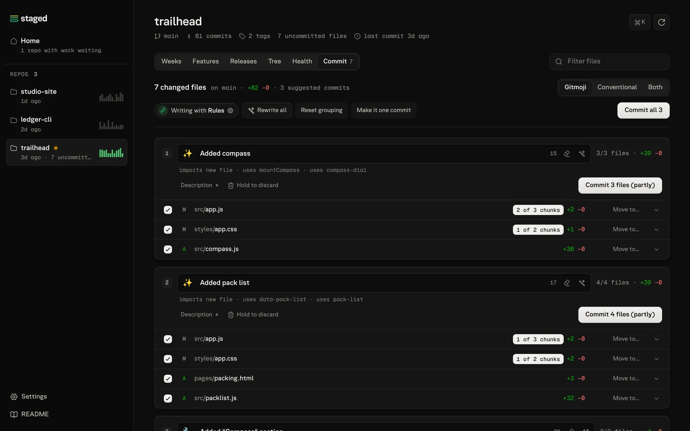
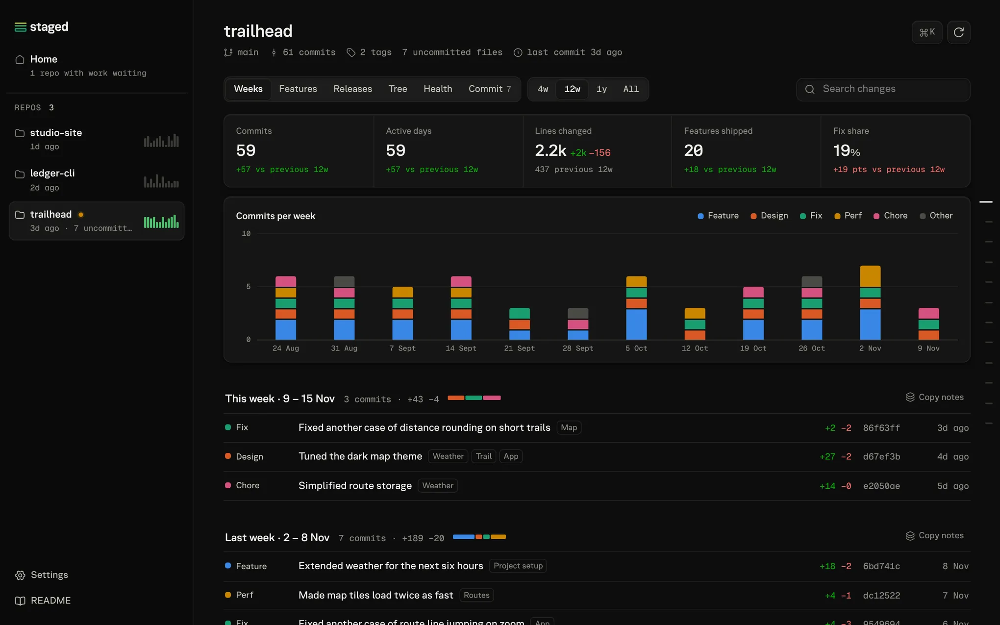
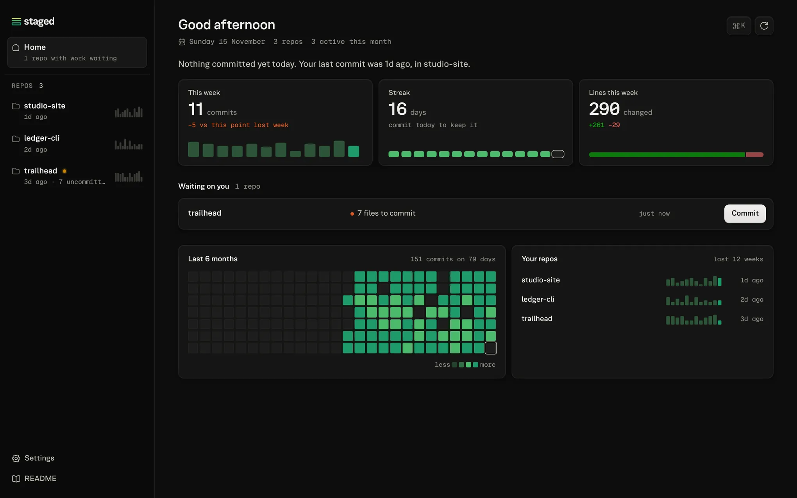
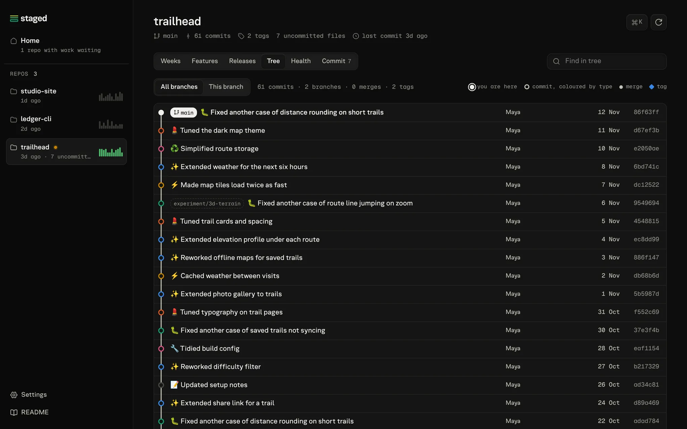

Commit your work. Properly.
staged reads the git repos on your computer, sorts your uncommitted work into clean commits and writes the messages. You check, tweak and commit.
git clone https://github.com/Vyshnav2255/staged.git && cd staged && npm start
From a pile of changes to a clean history.
You worked on three things at once and now there are forty changed files. staged untangles them, so every commit is one thing.
Sorts changes into commits
staged follows real imports, shared names and what you usually commit together. A new feature travels with its styles and the lines that hook it in.
- Splits a single file by chunk when it holds two features
- Move a file once and it remembers next time
- Warns before a key or a huge file goes in
Writes the message
Every commit comes with a subject that says what changed for someone using your app, in the tense and style your repo already uses. Gitmoji, conventional commits, or both.
- Works with no AI at all, from the diff alone
- Or pick a model: one on your computer, Apple Intelligence, or an online one with your key

Shows where your week went
Home is one calm page across all your repos: what you shipped this week, your streak, and what is still waiting to be committed or pushed.

Lets you read your history
Weeks, features and releases instead of a wall of hashes. A tree of every branch, merge and tag. A health view that finds the commit that made your site heavy.

Built to stay out of your way.
It runs on your computer
No account and no server of ours. staged is a small local app at localhost:4321 that reads your repos in place. Nothing leaves your machine unless you choose an online model.
Everything can be undone
Discarded changes go to a trash you can bring back from. The last commit has an Undo. staged never pushes unless you press Push.
Nothing to install around it
One folder, zero dependencies. It needs Node and git, which you already have. It updates itself when a new version is out.
Good to know.
Is it free?
Yes. There is no paid tier, no trial and no account.
Does my code leave my computer?
Not by default. Grouping and messages work from built-in rules, and the optional models run on your machine. If you add a key for an online model, staged sends only the changes it is writing about to the service you picked.
Do I need an AI model?
No. staged groups and writes from the diff on its own, instantly. A model makes the wording sharper. You can use an open model that staged downloads for you, Apple Intelligence on recent Macs, Claude Code if it is installed, or an online model with your own key.
Will it change my repos without asking?
No. It only suggests. A commit happens when you press Commit, and a push when you press Push. Its own settings live in ~/.config/staged, never in your repos.
How does it decide what goes together?
It resolves real imports, matches names and folders, looks at which files you have committed together before, and compares what the code talks about. Files with several separate edits are split by chunk, so one file can feed two commits.
What do I need to run it?
Node 18 or newer and git. Clone the repo and run npm start. It can stay running in the background and start at login, or run only while a terminal is open.
Which repos does it show?
It finds the folder your repos live in, such as ~/GitHub or ~/Developer, and lists every git repo inside. You can add folders, add single repos, or hide any of them in Settings.
Does it work with GitLab and others?
Yes. It works on the git repo on your disk, so the host does not matter. Push goes wherever your remote points.
Your next commit, already sorted.
git clone https://github.com/Vyshnav2255/staged.git && cd staged && npm start